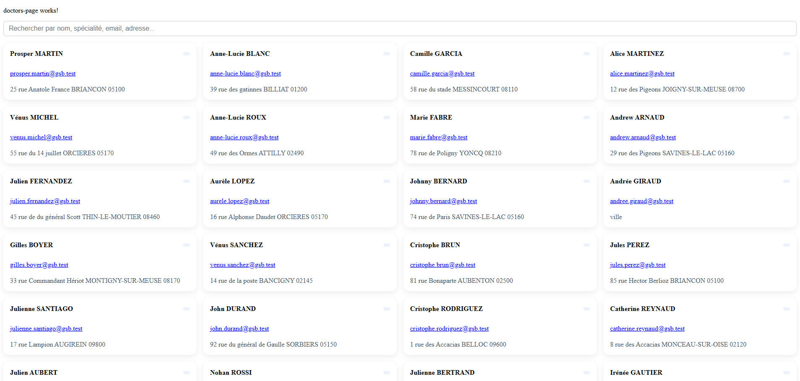

GSB-Doctor
Application Angular légère pour afficher et rechercher des médecins.

Interface de gestion des médecins développée avec Angular
Application Angular légère pour afficher et rechercher des médecins.

Interface de gestion des médecins développée avec Angular